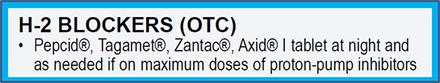
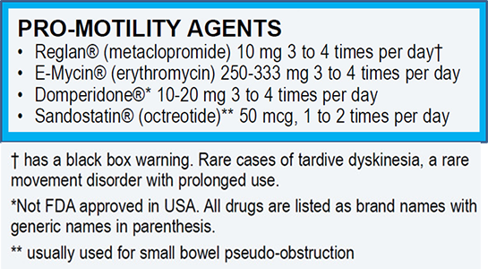

Module: Dysphagia and the Digestive Tract
Janet L. Poole, PhD, OTR/L, and Cindy Mendelson, PhD, RN, and Dinesh Khanna, MD, MS
The following list of medications is provided to tell you about the types of medical treatments available. It is important that you do not take medications on your own without talking to your doctor first if you have new symptoms, because these symptoms may mean that there is a change in your condition that needs to be checked. More information about these medications is available at http://www.scleroderma.org/site/DocServer/digestive_system_article.pdf?docID=314 (see Table 3).
H-2 blockers
These are medicines that may provide some relief for heartburn but do not control reflux symptoms. H-2 blockers are available through prescription or over the counter. Examples include Zantac® and Pepcid®.
Proton pump inhibitors
These are medicines that prevent acid production and stop heartburn. Always take these medicines with you, because if you miss a few doses, acid production can increase and your symptoms might get worse. Examples are Prilosec® and Prevacid®.

GI stimulants
These are medicines that stimulate intestinal muscle contractions and improve the movement of the bowel. They may improve heartburn. An example is Reglan®.
Esophageal dilation
Esophageal dilatation (or stretching) is a treatment in which a tube is passed through the mouth and down the esophagus, and actually stretches the narrowing at the end of the esophagus. This allows food to go down more easily. However, sometimes stretching the opening can also let stomach contents reflux back into the esophagus. Your doctor will decide when this is a good option for you.